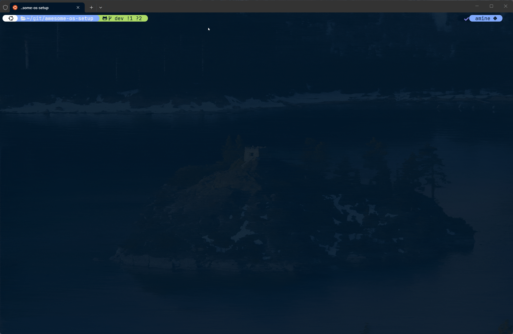

Awesome OS Setup¶

| App Showcase |
|---|
 |
An opinionated setup app + documentation hub for building a fast, clean, and consistent environment across Windows, Linux, macOS, WSL2, and even your living room stack (Google TV + Stremio) and home server (Home Assistant).
Improve your UX and productivity with a reproducible setup for:
- Development tools and package management
- WSL2 workflows
- GPU drivers
- Terminal UX (Zsh/Oh-My-Zsh/Powerlevel10k)
- Window tiling management
- Home automation (Home Assistant)
- TV setup (Google TV + Stremio/Nuvio)
The image above is the app that runs on your terminal, it supports multiple OSes (Windows, Linux, macOS, WSL2) and can be used with a mouse to click on the buttons. You can follow this repository to get a similar setup on Windows 11, Linux, macOS, or a hybrid workflow (Windows + WSL).

Table of contents
- Awesome OS Setup
- What is this repo?
- Project TODO / Roadmap
- Check the documentation
- Contributing (For developers)
Get started¶
Linux / WSL2 / MacOS¶
Get started with one command in bash/zsh:
sh -c "$(wget https://raw.githubusercontent.com/AmineDjeghri/awesome-os-setup/main/install_unix.sh -O -)"
If you are using a headless server (ubuntu-server for example), prefer to use a client with a GUI and connect to the server via SSH so you can copy-paste the commands and use Awesome-OS with a mouse.
Windows 11¶
Get started with one command (run it in PowerShell as administrator):
$u='https://raw.githubusercontent.com/AmineDjeghri/awesome-os-setup/main/install_windows.ps1'; $p="$env:TEMP\install_windows.ps1"; iwr $u -UseBasicParsing -OutFile $p; powershell -ExecutionPolicy Bypass -File $p
Run it from the directory where you want the awesome-os-setup folder to be created. If the repertory already exists, it will update it.
[!TIP] You can fork this repository and change the apps/packages you need so it reflects what you want to install in your environment.
What is this repo?¶
This repo is a personal “OS setup Terminal UI App”:
Features & Benefits¶
- One‑liner installers
- Windows: PowerShell script that installs selected apps via
winget, enables WSL, applies Windows Terminal defaults, and fetches GlazeWM config. -
Linux / WSL/ macOS: Bash script that installs Zsh/OMZ/P10k, terminal tools, and optional NVIDIA for Linux.
-
Cross‑OS Python TUI
-
TermTk‑based app (
main.py) with:- OS detection (Windows, WSL, Linux, macOS),
- System action sections (WSL tools, Windows utilities, package managers).
-
Unified package catalog
src/awesome_os/config/packages.yamlas a single source of truth for packages.-
Concrete backends implemented:
- Linux:
- Ubuntu:
UbuntuAptManager,UbuntuSnapManager, - Arch:
ArchLinuxYayManager - Windows:
WindowsWingetManager, - macOS:
DarwinBrewManager,DarwinBrewCaskManager.
-
WSL workflow helpers
-
Actions to:
- List installed / online distros,
- Install a distro with optional custom location,
- Export / import / move / unregister distros,
- Shutdown and update WSL.
-
Windows Terminal helpers
- Apply consistent defaults (Night Owl scheme, JetBrains Mono font, opacity, elevation).
-
Add a dedicated Ubuntu profile with an icon.
-
Curated documentation
- Windows & Linux workflows, TV setup (Google TV + Stremio), home server (Ubuntu Server + KVM + Home Assistant), app shortcuts, and browser extensions, mirrored to a static site via
properdocs.
Docs and websites¶
-
Windows/WSL2 docs: here: LINK
-
Linux/WSL2 docs: here: LINK
-
macOS docs: here: LINK
-
TV setup docs: Read me about it here: LINK
-
Home server / Home Assistant docs: here: LINK
-
Apps setup docs: LINK
-
Websites & Browser extensions docs: LINK
For Windows users: Why you should use WSL2? WSL2 enables users to run Linux applications and use command-line tools natively on their Windows machines. This integration allows users to enjoy the familiarity of Windows while simultaneously harnessing the power and flexibility of Linux. Also, a surprising number of Linux GUI apps can run on WSL. GUI applications are officially supported on WSL2 and referred to as WSLg(No installation required).
| macOS | Linux | Windows with WSL | |
|---|---|---|---|
| Advantages | (+) Excellent for coding and video editing. Supports Adobe & Office products. | (+) Ideal for coding and gaming, providing good performance in both areas. | - (+) Seamless compatibility with diverse software, including Adobe & Office products. (+) Optimal choice for gaming enthusiasts (+) Well-suited for coding with Windows Subsystem for Linux (WSL) and no need for dual boot. |
| Inconvenient | (-) Limited gaming capabilities compared to Windows & Linux. | (-) Lacks support for Adobe & Office products and certain software. | (-) UI is not smooth and responsive compared to macOS & Linux |
Within the domain of development, Unix-based systems such as Linux and macOS frequently garner attention. Nevertheless, the integration of WSL allows smooth coding alongside the utilization of Adobe and Microsoft products that may lack support on Linux. This flexibility, coupled with the ability to handle resource-intensive games beyond macOS capabilities, positions Windows-WSL as an enticing platform, ensuring a well-rounded computing experience for all users, regardless of their workplace constraints.
Based on your needs, you can choose your OS.
Project TODO / Roadmap¶
- [ ] add missing apps
- [ ] Some dotfiles integration (GlazeWM, aerospace, raycast...)
- [ ] Chezmoi integration
Docs & site¶
- [ ] Fix broken README one‑liners (curl/wget URLs to this repo) and update URL to main branch
Quality & UX¶
- [ ] Update UX/UI.
- [ ] Display a checkmark when a package is installed.
- [ ] Add tests and CI coverage for:
- [ ] Parsing
packages.yaml. - [ ] Package manager factory mapping.
- [ ] Windows/WSL command runner behavior.
- [x] Docker image to test Arch
- [ ] Docker image to test Ubuntu
- [ ] Docker image to test macOS
Check the documentation¶
You can check the documentation (website).
Contributing (For developers)¶
Check the CONTRIBUTING.md file for more information.
Star History Chart